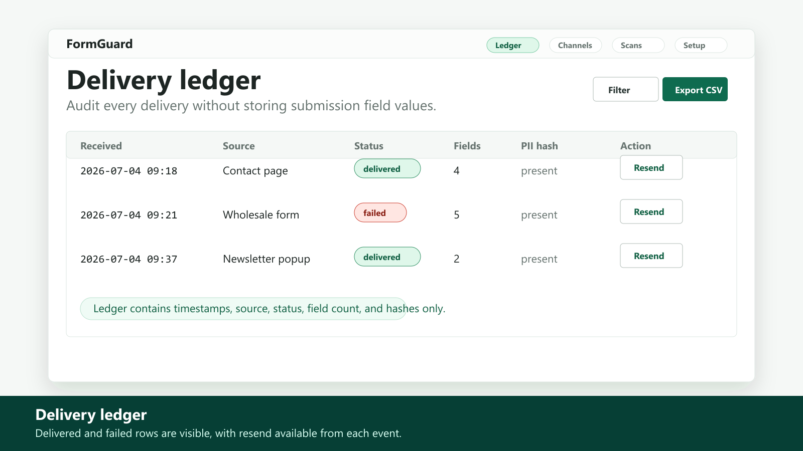
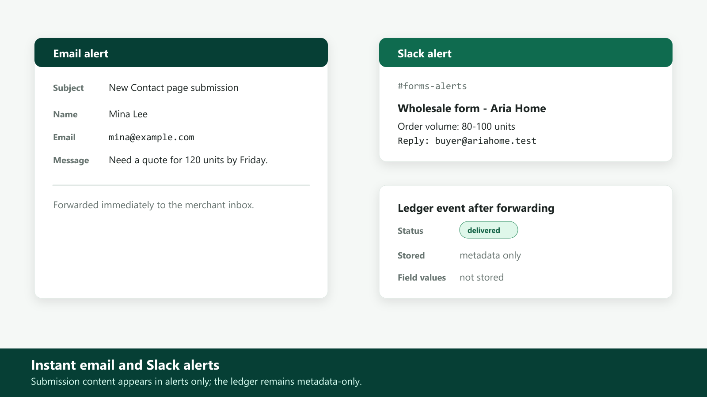
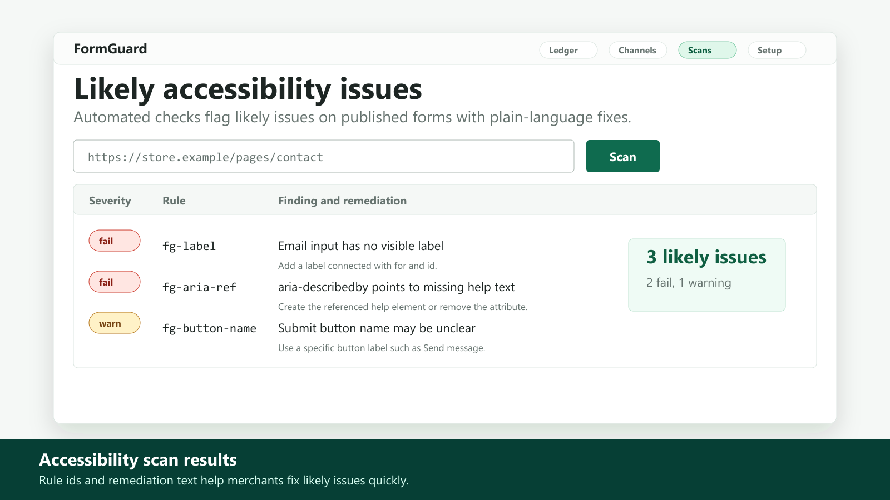
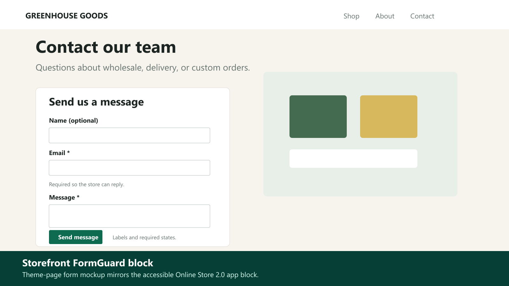
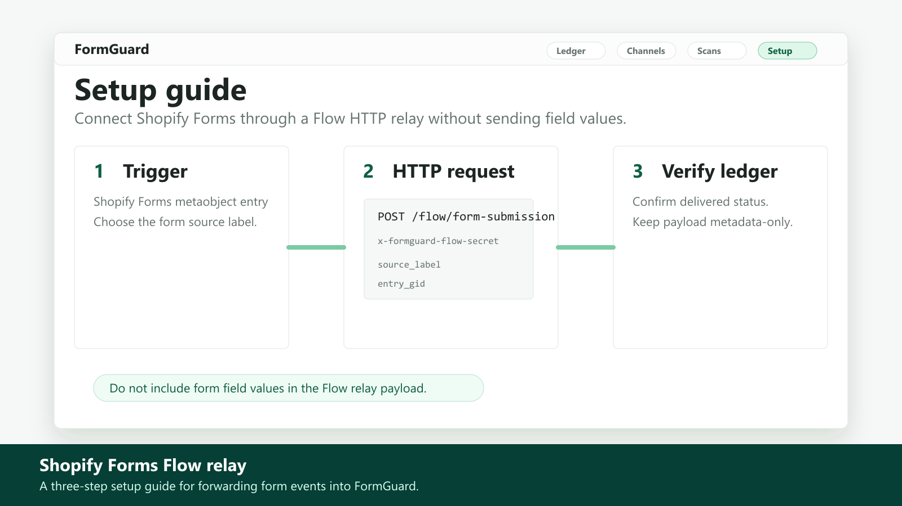

$7/month · 7-day free trial
FormGuard Form Monitor
Never miss a form submission, with accessibility checks
FormGuard helps merchants confirm form delivery. Its accessible form block forwards entries to email or Slack with a metadata delivery ledger. Shopify Forms can connect through a Shopify Flow relay. It also scans published forms for likely accessibility issues such as missing labels, broken ARIA wiring, and unnamed buttons.
Coming to the Shopify App StoreWhat it does
- Instant email and Slack alerts for every form submission
- Accessible-by-construction form block for Online Store 2.0 themes
- Delivery ledger to audit delivery and resend alerts
- Automated accessibility checks with plain-language remediation tips
- Privacy by design: submissions are forwarded, never stored
Pricing
$7/month
7-day free trial. One focused plan for the features listed here.
Screenshots





FAQ
Is FormGuard a form builder?
No. It provides a focused form block, delivery assurance, metadata ledger, Flow relay, and accessibility checks.
Does FormGuard store submitted messages?
No. Raw submission values are processed in memory, forwarded to configured alert channels, and discarded.
Does the accessibility scanner certify compliance?
No. It reports likely issues and practical remediation tips; it does not make compliance claims.
Can Shopify Forms connect?
Yes. Shopify Forms can be connected through a simple Shopify Flow relay that uses metadata-only payloads.
Coming to the Shopify App Store
The store link will be added after app review approval.